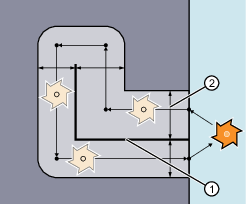

Ein Teileprogramm zum Fräsen einer Nut mit TRACYL-Transformation 513 (TRACYL mit Nutwandkorrektur) besteht in der Regel aus folgenden Schritten:
Werkzeug anwählen.
TRACYL anwählen.
Passende Koordinatenverschiebung (FRAME) anwählen.
Positionieren.
OFFN programmieren.
WRK anwählen.
Anfahrsatz (Einfahren der WRK und Anfahren der Nutwand).
Kontur der Nutmittenlinie.
WRK abwählen.
Abfahrsatz (Ausfahren der WRK und Wegfahren von der Nutwand).
Positionieren.
TRAFOOF.
Ursprüngliche Koordinatenverschiebung (FRAME) wieder anwählen.
Um mit der TRACYL-Transformation 513 Nuten zu fräsen, wird im Teileprogramm die Mittenlinie der Nut und über die Adresse OFFN die halbe Nutbreite programmiert.
Um eine Beschädigung der Nutwand zu vermeiden, wird OFFN erst mit angewählter Werkzeugradiuskorrektur wirksam.
Eine Änderung von OFFN innerhalb des Teileprogramms ist möglich. Damit kann die Nutmittenlinie aus der Mitte verschoben werden:
① | OFFN |
② | Programmierte Bahn |
| Hinweis |
OFFN sollte mindestens so groß wie der Werkzeugradius sein, um eine Beschädigung der gegenüberliegenden Nutwand auszuschließen. |
| Hinweis |
OFFN mit TRACYL wirkt sich anders aus als ohne TRACYL. Da OFFN auch ohne TRACYL bei aktiver WRK eingerechnet wird, sollte OFFN nach TRAFOOF wieder zu Null gesetzt werden. |
| Achtung |
Wirkung von OFFN ist vom Transformationstyp abhängigBei der TRACYL-Transformation 513 (TRACYL mit Nutwandkorrektur) wird für OFFN die halbe Nutbreite programmiert. Bei der TRACYL-Transformation 512 (TRACYL ohne Nutwandkorrektur) wirkt der Wert von OFFN dagegen als Aufmass zur WRK. |
Bei der TRACYL-Transformation 513 wird die WRK nicht relativ zur Nutwand, sondern zur programmierten Mitte der Nut eingerechnet. Damit das Werkzeug links von der Nutwand fährt, ist statt G41 die Anweisung G42 zu programmieren oder der Wert von OFFN mit negativem Vorzeichen anzugeben.
Mit TRACYL und einem Werkzeug, dessen Durchmesser kleiner als die Nutbreite ist, wird nicht dieselbe Nutwandgeometrie erzeugt, wie mit einem Werkzeug, dessen Durchmesser gleich der Nutbreite ist. Zur Verbesserung der Genauigkeit wird empfohlen, den Werkzeugdurchmesser nur wenig kleiner als die Nutbreite zu wählen.
| Hinweis |
Folgende Achsen können nicht als Positionierachse bzw. Pendelachse verwendet werden:
|